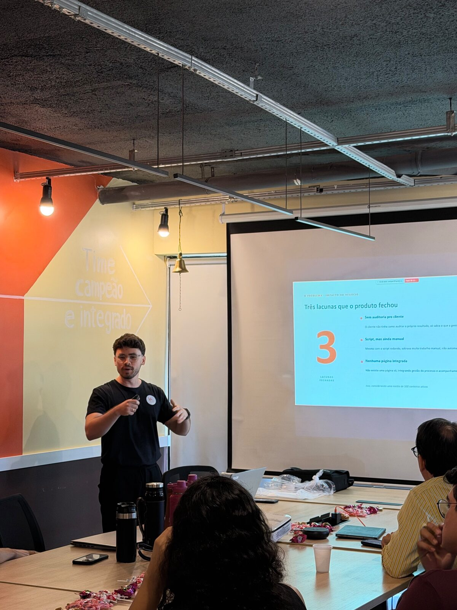
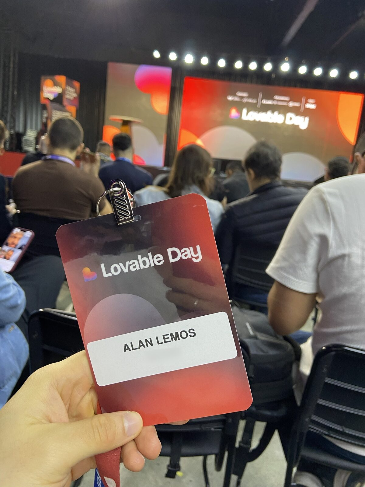

Hi everyone! On Friday, October 16, I had an amazing experience at Lovable Day in São Paulo. But this story didn't start there; it started a little earlier, when the company I work for held an internal competition for artificial intelligence projects.
A colleague and I were named among the best projects, and that recognition earned us the chance to attend the event as a prize.


What struck me most at Lovable Day was seeing how attentive the company is to AI market trends, encouraging internal competitions that drive innovation and learning. The event was also excellently organized, creating a rich environment to connect with other professionals and exchange experiences about the future of artificial intelligence.
What I brought back
I came back with a full notebook. Here are the lessons I think are useful for any person or company starting to use AI day to day.
01Adopting AI is a journey, not a button
Companies mature with AI in stages. First come the "champions", people who get excited, experiment and pull the rest of the team along. Then knowledge starts to be shared and becomes a collective practice. At the most advanced stage, the AI itself starts suggesting improvements. And implementing it well follows a clear path: diagnose, quantify, implement and make sure it works, redrawing the map whenever the road shows something new.
02Start with what weighs the most day to day
The question "which platform should we build?" has a practical answer: look at the tools the company spends the most on and at the information someone repeats every day. That's where custom interfaces, AI agents and automations, connected to the systems you already use, pay off fastest.
03You can build by talking
One tip that stuck with me: close your eyes and describe out loud the website you have in mind, using a voice dictation tool like Wispr Flow. The idea comes out more complete than when we try to write the perfect prompt.
04Design is still a differentiator
With so many people building products with AI, design is what sets them apart and creates attachment. Working isn't enough: it's worth aiming for a design that's a pleasure to use.
05Building got fast. Shipping safely didn't.
In a panel discussion, a healthcare company summed up the challenge well: three days to build a product and three months to put it into production, because of security. No wonder there are already automated security checks designed for people building with AI, from basic scanning to penetration testing.
06After building comes growing
The work doesn't end with building. AI also helps you show up in search, both on Google and in AI assistants' answers, support ad campaigns, produce posts and carousels for social media and even generate videos with avatars. Another step is turning your platform into an MCP so AI assistants can use it directly.
07Trends to watch
- Hackathons as a way to innovate inside companies, like the competition that took me there.
- The provocation that websites as we know them today will lose ground to conversations with AI.
- Products that suggest the next step, instead of waiting for the user to ask.
- The "second brain": your information organized in folders and queried by an AI agent. The better the context you provide, the better the help you get.
Thanks to the team for the opportunity, and I'm excited to put everything I saw into practice.